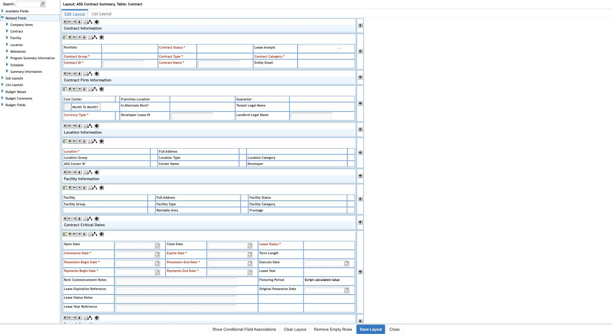
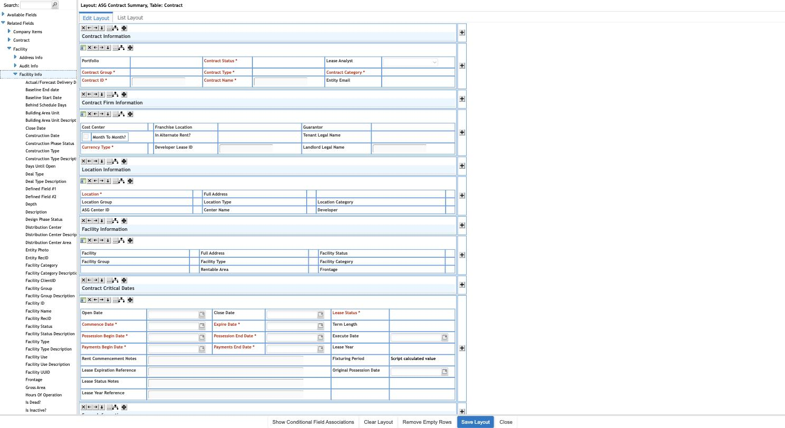
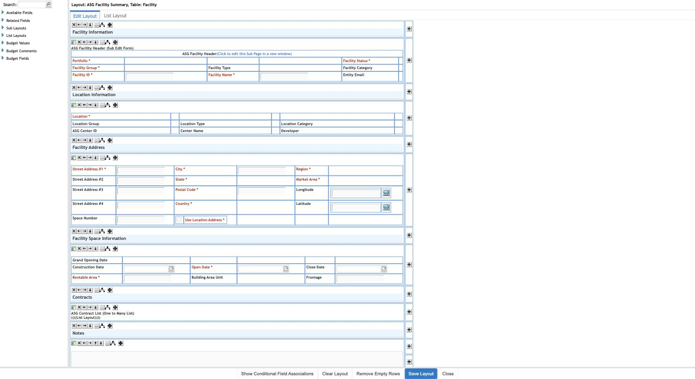
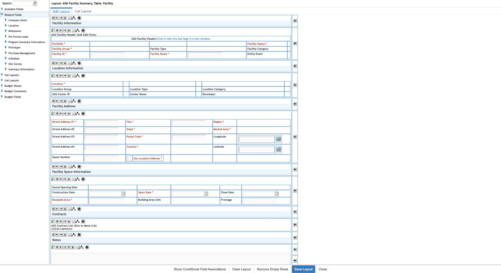
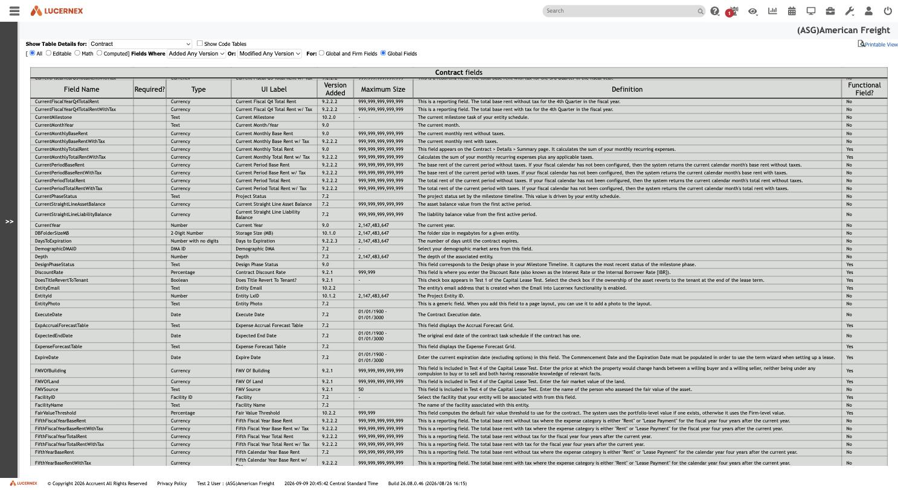
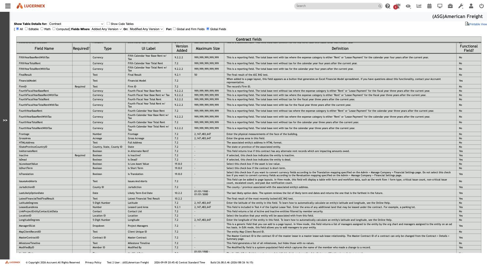
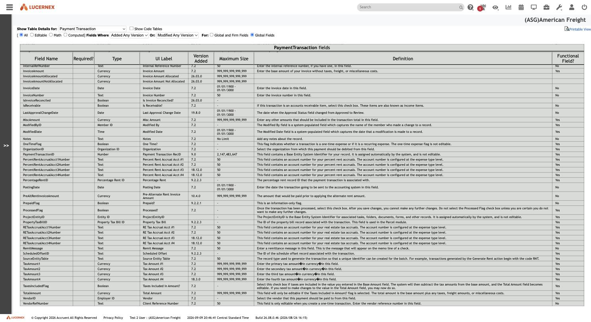
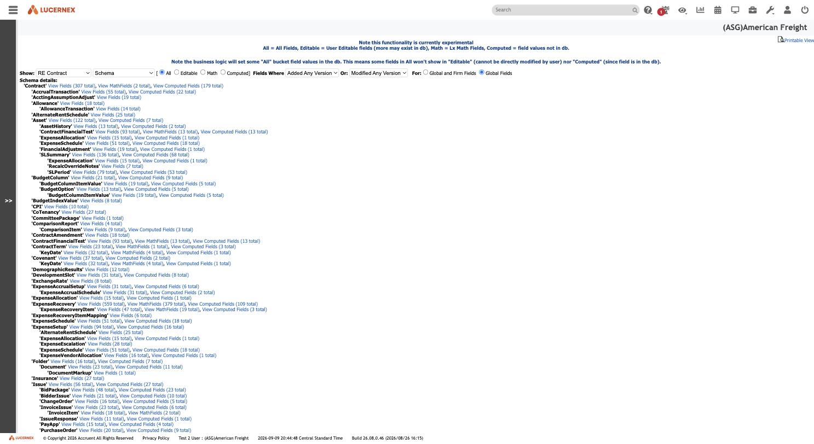

Atlas › Research › 009 — Related Fields and the Underlying Data Model
The written corpus: feature manuals, module analyses, tenant comparisons, admin tools.
009 — Related Fields and the Underlying Data Model
Identification
| Property | Value |
|---|---|
| Feature | The Related Fields palette inside the Page Layout builder, plus the View Object Model (ShowObjectDetails.jsp) and View Data Model / Data Values (experimental) (walkHierarchy.jsp) admin schema browsers |
| Base routes | LayoutEditorAJAX.jsp?...&PageLayoutID={id} (builder); /en/admin/ShowObjectDetails.jsp (Object Model); /en/test/walkHierarchy.jsp (Data Model, marked experimental) |
| Layouts used | ASG Contract Summary (PageLayoutID=96289, Primary Table Contract); ASG Facility Summary (PageLayoutID=96291, Primary Table Facility) — both reused from 008 for continuity |
| Tenant | (ASG)American Freight |
| Captured | 2026-09-10, footer showed 2026-09-09 Central Standard Time |
| Application build | 26.08.0.46 (2026/08/26 16:15) |
| Exploration mode | Read-only inspection. No Save Layout, Update, Add, Delete, or any field was placed, moved, or removed on any layout. The Object Model and Data Model tools are read-only report screens; the only interaction was changing the "Show Table Details for" filter dropdown, which re-renders the same report for a different table (a GET-equivalent, not a mutation). |
This document answers the question 008 could only flag as unexplored: what exactly does the layout builder's Related Fields palette enumerate, and is it backed by a real foreign-key-driven relational model or something looser (e.g. a shared taxonomy with no real join).
Short answer, stated up front: it is a genuine, foreign-key-driven relational model. Contract carries literal FK columns — FacilityID, LocationID, OrganizationID, MasterContractID — each with a first-class schema type named after its target table (Facility ID, Location ID, Organization ID, Contract ID), directly visible in Lx's own schema-browser admin tools. See Interpretation for confidence levels on the parts that required more inference.
Screenshots
Related Fields — top-level list for Contract

{kind=link}
Related Fields → Facility → Facility Info — full field catalog pass-through

{kind=link}
Facility Summary layout — the reverse direction is a List Layout, not Related Fields

{kind=link}
Facility's own Related Fields list — no Contract entry

{kind=link}
View Object Model — Contract.FacilityID

{kind=link}
View Object Model — Contract.LocationID and Contract.MasterContractID

{kind=link}
View Object Model — PaymentTransaction.VendorID

{kind=link}
View Data Model (experimental) — RE Contract schema tree

{kind=link}
Entry path
- Sign in to the authorized Lx training tenant.
- Reuse 008's layout builder route directly: navigate to
LayoutEditorAJAX.jsp?formSubmit=editBO&popupEdit=true&buildLayout=true&PageLayoutID=96289(ASG Contract Summary) and expand Related Fields in the left sidebar. - For the bidirectionality check, do the same for ASG Facility Summary (
PageLayoutID=96291, found viaManage Summary Pages→ row for "ASG Facility Summary" → inspecting thebuild layoutlink'sonclickfor itsPageLayoutID, exactly as 008 documents for the popup/opener limitation). - From the System Administrator Dashboard → Data/PS Tools column, follow View Object Model (
/en/admin/ShowObjectDetails.jsp) and View Data Model / Data Values (experimental) (/en/test/walkHierarchy.jsp) — two admin-only schema browsers not previously explored. - On View Object Model, use the "Show Table Details for" dropdown (224 tables) to switch between
Contract,Payment Transaction, andAccrual Transaction.
Only navigation, sidebar-tree expand/collapse, and dropdown-filter changes on read-only report screens were performed.
Visible layout and controls
Related Fields is a top-level, collapsible node in the Page Layout builder's left sidebar, alongside Available Fields, Sub Layouts, List Layouts, Budget Values, Budget Comments, Budget Fields (all documented structurally in 008). Expanding it reveals a flat list of other tables, each independently expandable into the same kind of group → subgroup → leaf-field tree that Available Fields uses for the layout's own Primary Table.
View Object Model (ShowObjectDetails.jsp) is a plain schema-dump report: a "Show Table Details for" dropdown listing all 224 tables in the system, filter radios (All / Editable / Math / Computed, version-added/modified, Global vs. Firm), and a table with columns Field Name (internal DB column), Required?, Type, UI Label, Version Added, Maximum Size, Definition, Functional Field?.
View Data Model / Data Values (experimental) (walkHierarchy.jsp) is a different, complementary report: a "Show" dropdown of aggregate-root entities (Portfolio, Capital Program, Prototype, Location, Parcel, Site, Opening Project, Facility, Capital Project, RE Contract, Equipment Contract, Firm, Firm All Children, All Tables) and a mode selector (Schema, Schema With Fields, All Values For, Non-Empty Values For). Selecting RE Contract + Schema renders a literal nested tree of owned child business objects rooted at 'Contract', each annotated with its own field/computed-field counts — not a flat table list, but Lx's own declared composition hierarchy.
Data displayed — the Related Fields inventory for Contract
Expanding Related Fields on the ASG Contract Summary layout (Primary Table Contract) lists exactly eight related tables:
Company Items, Contract, Facility, Location, Milestones, Program Summary Information, Schedule, Summary Information
Each expands into subgroups, several of which visibly mirror the same subgroup names documented for Facility/Location/Organization's own native catalogs:
| Related table | Subgroups seen | Leaf-field behavior |
|---|---|---|
| Facility | Address Info, Audit Info, Facility Info | Facility Info alone lists 40+ fields (Facility ID, Facility Name, Facility Status, Facility Category, Frontage, Gross Area, ...) — a full pass-through of Facility's own native field catalog, not a curated subset. |
| Location | Address Info, Audit Info, Location Info | Same 3-subgroup shape as Facility. Not fully re-expanded field-by-field, but the subgroup naming pattern matches. |
| Company Items | Organization, Summary | Organization lists a complete Organization-entity catalog (Account Number #1–8, Organization Category, Organization Group, Organization Name, Organization RecID, Organization Type, Portfolio Access, ...). Summary lists tenant/Firm-level configuration fields (Facility Setup Page, Location Setup Page, JSON Configuration, Service Channel FirmID, ...) — this is the singleton Firm/Company record, not a per-instance related record. |
| Contract (self) | Accounting Assumptions, Contract Term | Much smaller than Contract's own 16-subgroup Available Fields catalog: Accounting Assumptions → only Contract Discount Rate; Contract Term → only Next Available Term, Next Available Term Key Date, Remaining Number of Term. See Interpretation — this is fields pulled from a linked Contract record, not a full duplicate of Contract's own catalog. |
| Milestones | Milestone Tasks, Summary | Not fully expanded; consistent with a one-to-many child concept, distinct from the many-to-one lookups above. |
| Program Summary Information | Program Summary Information (single, same-named subgroup) | Not expanded further. |
| Schedule | Summary Information, Schedule Tasks | Not fully expanded. |
| Summary Information | Comparison Report, Contacts, Custom Lists, General Summary Information, Management, Membership, Summary Dates, Summary Page Buttons | Richest node; overlaps with the sibling top-level Summary Information group already visible directly under Contract's own Available Fields (per 008) — see Interpretation for the likely polymorphic-attachment reading. |
The concrete foreign-key evidence
Two independent, corroborating pieces of direct evidence establish that these "related tables" are real FK joins, not a shared-taxonomy illusion:
1. Placed-field HTML ids on the canvas
The Contract Summary layout already has Facility- and Location-sourced fields placed in its "Location Information" and "Facility Information" sections. Inspecting the rendered DOM:
LocationID_label (Location field's label element)
FacilityID_label (Facility field's label element)
wdd_div_LocationID... (widget wrapper div for the Location lookup control)
wdd_div_FacilityID... (widget wrapper div for the Facility lookup control)The underlying field names are literally LocationID and FacilityID — not "Location"/"Facility" as cosmetic labels, but classic FK-style column names with an ...ID suffix.
2. The View Object Model schema browser
Switching View Object Model to Contract (sqlTableID=2792) and reading its 307-field schema directly confirms these as declared, typed columns:
| Field Name | Type | UI Label | Definition |
|---|---|---|---|
FacilityID | Facility ID | Facility | "Select the facility that your entity will be associated with from this field." |
LocationID | Location ID | Location | "Select the location that your entity will be associated with from this field." |
OrganizationID | Organization ID | Organization | "Select the organization where payments should be debited from this field." |
MasterContractID | Contract ID | Master Contract | "The Master Contract ID is the contract ID of the master lease in a master lease-sub-lease relationship..." — a self-referencing FK. |
NextAvailableTermID | Contract Term ID | Next Available Term | FK to a ContractTerm child record — this is what backs Related Fields → Contract → Contract Term, clarifying that node is about this contract's own next-term lookup, not the master contract. |
ProgramID | Portfolio ID | Portfolio | Internal column name (ProgramID) differs from both the UI Label ("Portfolio") and the display convention elsewhere ("Portfolio/Capital Program") — a naming-legacy mismatch, not a different relationship. |
Lx's schema type system has first-class foreign-key types — Facility ID, Location ID, Organization ID, Contract ID, Contract Term ID, Member ID, Portfolio ID, Employer ID, etc. — each one literally named after its target table. This is the strongest single piece of evidence in this document: the relationship metadata is declared in the schema itself, not inferred from naming conventions or UI grouping.
A third confirmation, one level down the graph: switching View Object Model to Payment Transaction (sqlTableID=2810, the table behind ASG Contract Payments from 008) shows:
| Field Name | Type | UI Label | Definition |
|---|---|---|---|
ContractID | Contract ID | ContractID | The reverse FK — child row pointing back to its parent Contract. |
VendorID | Employer ID | Vendor | "Select the vendor that this payment should be paid to from this field." |
VendorID's declared type is Employer ID, not a separate "Vendor" type — direct schema proof that Lx's "Vendor" is a relabeled Employer record, not a distinct entity. This resolves the user's original "Vendor" example concretely: Contract itself has no direct Vendor/Employer FK; the FK lives one level down, on the child PaymentTransaction table.
3. A fourth, independent corroboration: the per-table Data Fields catalogs
A parallel exploration pass (running concurrently in this session) produced per-table field-catalog documents under docs/data-fields/ — built from the Manage Data Fields catalog (005) rather than View Object Model, and using Lx's internal sTYPE_* type codes rather than the human-readable "Type" column. Cross-checking against that independently-built source lines up exactly: docs/data-fields/contract.md lists FacilityID as sTYPE_FACILITY, LocationID as sTYPE_LOCATION, OrganizationID as sTYPE_ORGANIZATION, and MasterContractID as sTYPE_CONTRACT — the same four FK columns, named with the same target-table convention, from a completely different admin screen. One instructive wrinkle: docs/data-fields/payment-transaction.md types VendorID as sTYPE_VENDOR, not sTYPE_EMPLOYER — apparently a distinct field-level type code (likely driving a Vendor-filtered lookup popup) that nonetheless resolves to the same underlying Employer table, per View Object Model's "Employer ID" Type column above. The two tools describe the same join from two different altitudes: sTYPE_VENDOR is the field's presentation-layer type; Employer ID is what it actually joins to.
4. The Data Model (experimental) aggregate hierarchy
walkHierarchy.jsp's RE Contract → Schema view renders roughly 70 tables nested under 'Contract' as owned children — PaymentTransaction, PaymentReceipt, Covenant, ContractTerm → KeyDate, ContractAmendment, Sales, SecurityDeposit, Space, Responsibility, WorkFlow, ... — each with its own field count. Critically, Facility, Location, and Organization do not appear anywhere in this nested tree. They instead appear as separate, independent root entries in the tool's own top-level "Show" dropdown (Portfolio, Capital Program, Prototype, Location, Parcel, Site, Opening Project, Facility, Capital Project, RE Contract, Equipment Contract, Firm, ...).
This is a second, structurally independent confirmation of the same distinction the FK columns show: Lx's data model has owned one-to-many children (nested in this hierarchy, exposed in Page Layouts via List Layouts) and referenced many-to-one lookups (separate aggregate roots, exposed in Page Layouts via Related Fields). The two admin tools and the Page Layout builder all draw the same line, independently.
Are Related Fields a full catalog or a curated subset?
Mixed, and the mix itself is informative:
- Facility, Location, Organization (true many-to-one FK targets): Related Fields exposes what appears to be each target's complete native field catalog, subdivided into the same kind of Address Info/Audit Info/
<Table> Infosubgroups the target's own Available Fields tree would use. This is a straight pass-through/join, not a curated slice. - Contract (self, via
MasterContractID): Related Fields exposes only 4 fields total across 2 subgroups — a small, apparently purpose-built rollup (discount rate, next-term information) rather than Contract's full 307-field catalog. Reasonable reading: pulling an entire second contract's worth of fields onto a layout would be unwieldy and mostly meaningless for a master-lease relationship, so this node is deliberately narrower. This is inference, not directly observed (no admin screen was found that defines which fields qualify for this narrower list). - Summary Information: appears identically-named both directly under Contract's own Available Fields (per 008) and again under Related Fields, with overlapping subgroups (
Contacts, Custom Lists, Membership, ...). The likely explanation is that "Summary Information" is a generic, polymorphic extension record attached to any entity type (Contract, Facility, Portfolio, ...) rather than a single dedicated FK target — but this is interpretation, not confirmed by any schema screen inspected in this pass.
User interactions and observed behavior
- Expanding/collapsing Related Fields tree nodes is a pure client-side tree operation (matches the pre-rendered-DOM pattern already documented for Manage Data Fields in 005).
- Switching View Object Model's "Show Table Details for" dropdown re-renders the whole report for the newly selected
sqlTableIDvia achangehandler — confirmed a plain client-side filter/reload, not a mutating POST (the resulting URL carriessqlTableID,limitFieldFilter,showVersion,modifiedVersion,showGlobalas GET parameters). - Attempting to inspect a placed related field's own properties dialog (to determine read-only-display vs. live-lookup rendering, per the original task's item 5) was not achievable in this pass: as in 008, the layout builder was reached by direct navigation rather than through the true
lxPopup2popup flow, and the field-properties click targets that depend on that opener-side JavaScript state did not respond. Thewdd_div_FacilityID.../wdd_div_LocationID...wrapper divs (empty placeholder containers, not simple text inputs) are consistent with these being complex lookup-type widgets rather than plain text fields, but this falls short of directly observing the live-lookup vs. snapshot behavior.
Network requests or implementation clues
ShowObjectDetails.jsp?sqlTableID={id}&limitFieldFilter=All&showVersion=&modifiedVersion=&showGlobal=true— table-scoped schema dump,sqlTableIDvalues collected in this pass: Contract =2792, Facility =2530, Location =2804, Employer =2529, Payment Transaction =2810, Complex =2791. 224 tables exist in total.walkHierarchy.jsptakes no table-id parameter in this capture; its "Show" dropdown appears to select by a fixed set of named aggregate roots rather than an arbitrary table id.- Both admin tools are explicitly labelled experimental/internal-feeling (
walkHierarchy.jspcarries a visible "Note this functionality is currently experimental" banner) — these read as developer/support diagnostic tools exposed to System Administrators, not designed end-user documentation.
Permissions/tenant implications
- Both schema browsers were reachable from the same System Administrator Dashboard → Data/PS Tools column already inventoried (but not opened) in 008's sibling document context; no additional permission prompt or role check was visibly enforced beyond already being in the System Administrator Dashboard.
- The schema dump is platform-wide (
Global Fieldsradio, 307 Contract fields, 224 tables) — this is Lx's built-in object model, not tenant-specific configuration. It answers "what can a layout possibly relate to," not "what has this tenant chosen to customize" (that remains the Firm-scope Data Fields catalog documented in 005).
Mutation-risk register
| Control/action | Potential effect | Exploration decision |
|---|---|---|
| Related Fields tree expand/collapse | None (client-side only) | Performed freely |
| View Object Model "Show Table Details for" dropdown | Re-renders report for a different table (GET) | Performed freely |
| View Data Model "Show" / mode dropdowns | Re-renders report (GET) | Only the default RE Contract + Schema view was captured; other roots/modes (Schema With Fields, All Values For, Non-Empty Values For) were not exercised — All Values For/Non-Empty Values For sound read-only but were not tested to confirm they do not trigger a heavier live-data query |
| Layout builder field-properties dialogs | Unknown — blocked by opener-dependency, never actually opened | Not activated |
| Save Layout / Clear Layout / Add / Delete (any layout) | Persists or removes layout changes | Not activated |
No Lx page layout, field placement, or schema definition was created, edited, or deleted.
Interpretation
High-confidence conclusions
- The Related Fields mechanism is backed by a genuine, foreign-key-driven relational data model, not a shared-label illusion. Contract's own schema (via View Object Model) declares
FacilityID(typeFacility ID),LocationID(typeLocation ID),OrganizationID(typeOrganization ID), andMasterContractID(typeContract ID, self-referencing) as literal typed columns. The Related Fields sidebar'sFacility/Location/Contractnodes correspond exactly to these columns. - Lx's field-type system has first-class FK types named after their target table (
<Entity> ID) — this is declared schema metadata, directly visible to an administrator, not something this exploration had to infer from naming conventions alone. - The relationship is directional/asymmetric by cardinality, and the UI reflects this correctly. From Contract (the "many" side of a one-to-many with Facility), Facility is reached as a single related record via Related Fields. From Facility (the "one" side), Contract is not offered as a Related Fields target at all — instead it is composed as an embedded child grid explicitly labelled "ASG Contract List (One to Many List)" inside a List Layout sub-page. Two structurally independent tools (the Page Layout builder's own sidebar contents, and
walkHierarchy.jsp's aggregate-hierarchy tree, which nests Contract's one-to-many children but never Facility/Location) agree on this same distinction. - "Vendor" is a relabeled Employer, confirmed at the schema level:
PaymentTransaction.VendorIDhas declared typeEmployer ID. Contract has no direct Vendor/Employer FK; that relationship exists one level down, on the child Payment Transaction table. - Related Fields exposes each target table's full native catalog for true many-to-one lookups (Facility, Location, Organization all show extensive,
<Table> Info/Address Info/Audit Info-style subgroup catalogs matching each table's own field set) — this is a real join surfacing real columns, not a curated summary view.
Moderate-confidence / inferred
- The much smaller Related Fields → Contract (self) node (4 fields under Accounting Assumptions/Contract Term) is most likely a deliberately narrow rollup specific to the master-lease relationship, not evidence that self-references behave differently at the schema level —
MasterContractID's schema type isContract IDjust like any other FK, so the narrowing is a Page-Layout-builder UI/business decision, not a data-model limitation. - Summary Information appearing both directly under Available Fields and again under Related Fields, with overlapping subgroups (Contacts, Custom Lists, Membership), is consistent with it being a generic, polymorphic per-entity extension record (attachable to Contract, Facility, Portfolio, etc. alike) rather than a single dedicated FK target — but no schema screen in this pass named the actual join column for this specific case, so this remains an inference.
- The
wdd_div_...wrapper-div pattern around placed reference fields is consistent with a dynamic lookup/autocomplete widget (vs. a plain text input), supporting a "live reference" reading over a "static snapshot" reading for how a related field renders once placed — but this was not directly confirmed by opening the field's own properties dialog, which remained blocked by the same popup/opener dependency noted in 008.
Requires further exploration
- What exactly determines the curated 4-field subset under Related Fields → Contract (self)? Is this configurable per-tenant, or a fixed platform decision?
- Which column(s) back the Summary Information, Milestones, Program Summary Information, and Schedule Related Fields nodes specifically — are they all one-to-many children (like Milestones' own "Milestone Tasks" subgroup suggests) reached through a different mechanism than the Facility/Location/Organization many-to-one lookups, or a mix?
- Opening a placed related field's own field-properties dialog (blocked by the same popup/opener limitation as 008 and 006) would directly settle the live-lookup-vs-snapshot question for item 5 of the original task.
walkHierarchy.jsp'sSchema With Fields,All Values For, andNon-Empty Values Formodes were not exercised —Schema With Fieldsin particular would likely show the actual FK column name annotated directly onto each nested child in the hierarchy tree, which would be a stronger, single-screen confirmation of the whole relational picture documented here.